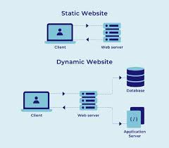

A web server is a system that stores, processes, and delivers web content to users over the internet. When a user requests a webpage through a browser, the web server retrieves the requested files and sends them back using HTTP or HTTPS protocols. Web servers can host multiple websites and are essential for making online content accessible to users worldwide.